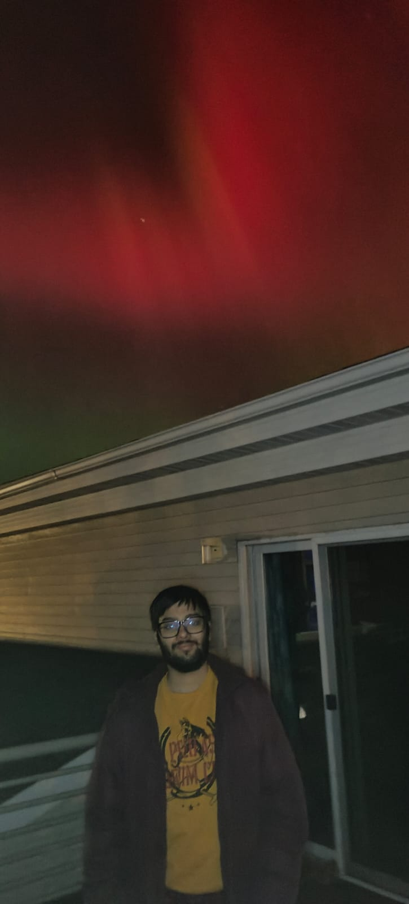
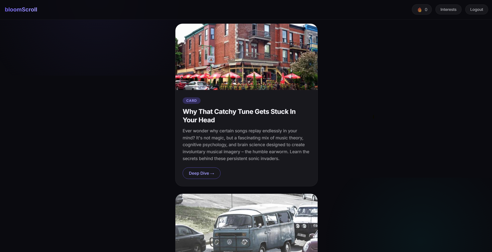
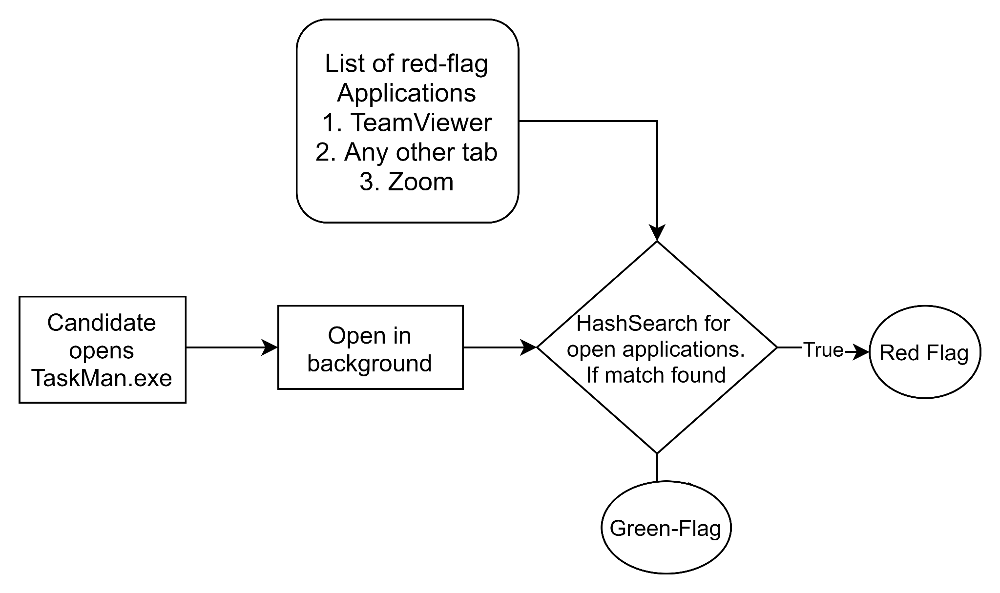
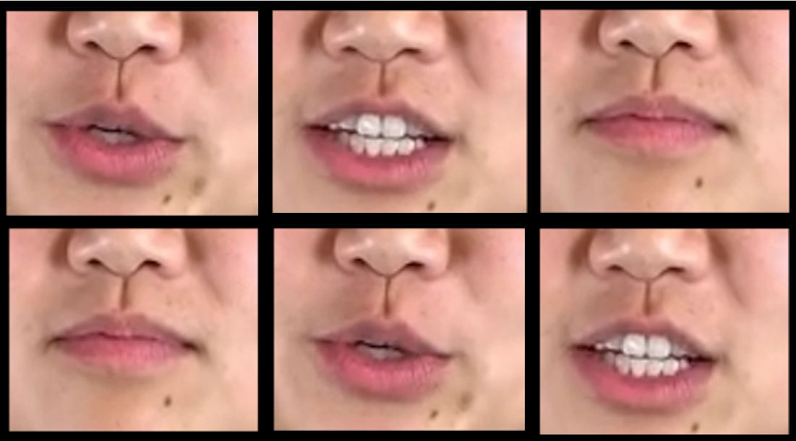
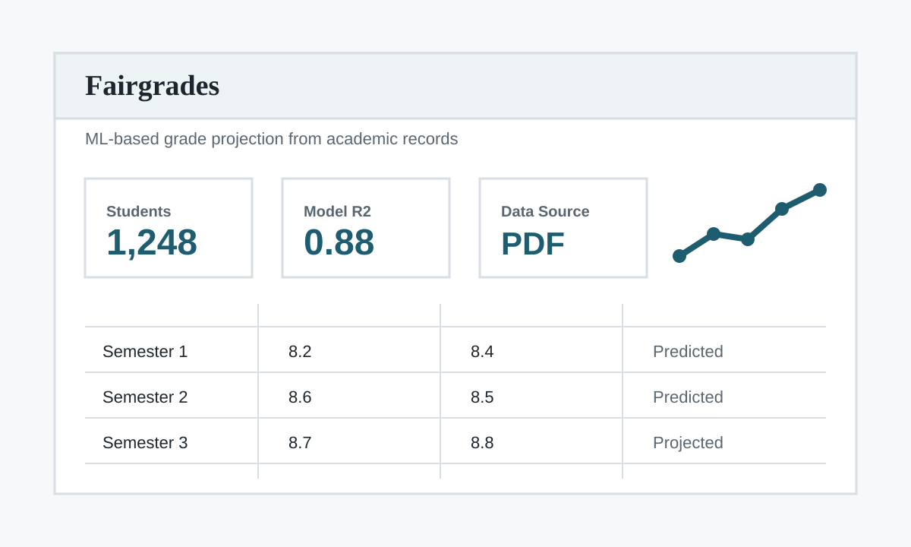

Computational Biology
AI methods for biological data, omics-informed analysis, and translational research questions.
PhD Student | University of North Dakota
I am a PhD student in Clinical and Translational Science at the University of North Dakota and a Graduate Research Assistant working on AI-driven computational analysis. My current work sits around computational biology, bioimaging, spatial biology, and omics-informed AI, while my broader interests are in useful, reliable AI systems that connect research ideas with working software.
Before starting my PhD, I completed a B.Tech in Computer Science and Engineering at Delhi Technological University and worked as a Software Development Engineer at Fareportal, where I built and maintained production systems including API features for travel products.

Areas that currently shape my academic and applied work.
AI methods for biological data, omics-informed analysis, and translational research questions.
Models and tools for imaging-based biological data, digital pathology, and spatially resolved measurements.
Practical machine learning systems for biomedical workflows, clinical research, and decision-support contexts.
Reliable AI applications that combine model development, evaluation, deployment, and usable software design.
Selected AI and software projects. See the project page for expanded notes.

AI Bioinformatics Platform
An AI-based bioinformatics platform for modern analysis of imaging-based data, including cell typing, gene expression prediction, and computational workflows around spatial and pathology data.

Human-Centered AI Application
A feed-control app aimed at reducing doom scrolling by helping users shape what they consume, with a more intentional and gamified content experience.

Applied Deep Learning
A remote proctoring framework using detection, facial landmarks, gaze cues, head-pose estimation, and suspicious task monitoring.

Media Forensics
A detection system combining EfficientNet with engineered video features such as blinking rate, frame correlation, and video quality.

Reinforcement Learning
A reinforcement learning project built around a Pygame game environment and trained from obstacle-distance state values.

Applied Machine Learning
A grade prediction project exploring ML-based alternatives for awarding grades when exams were disrupted.
For research conversations, collaborations, or academic inquiries, I am easiest to reach by university email.